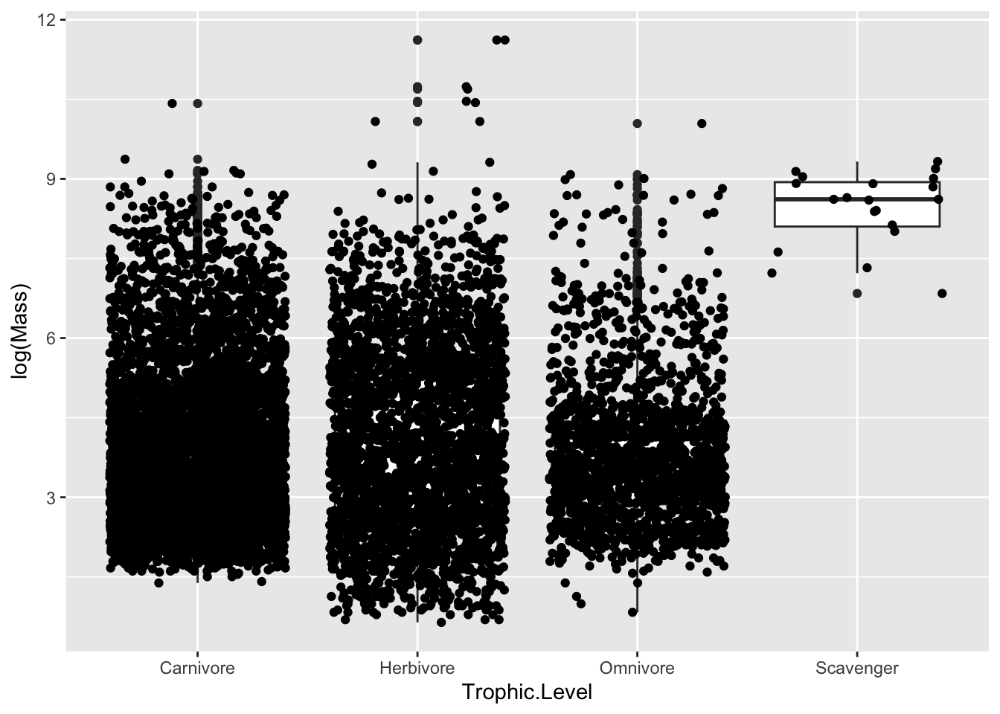
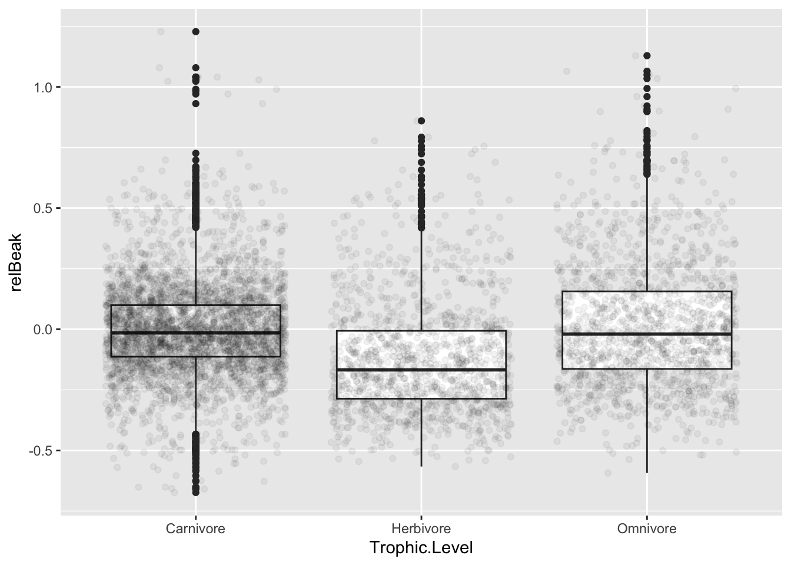
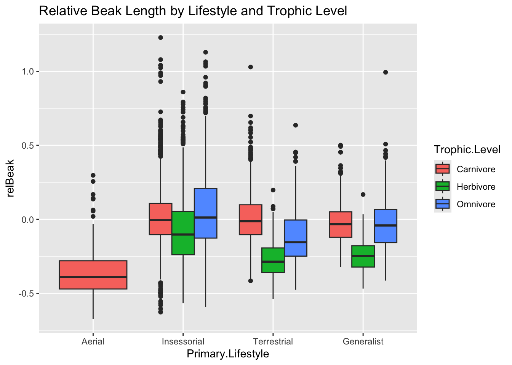
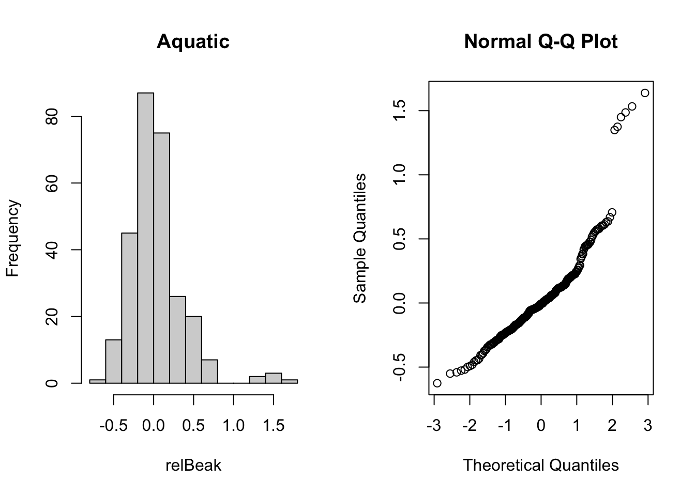

── Attaching core tidyverse packages ──────────────────────── tidyverse 2.0.0 ──
✔ dplyr 1.1.4 ✔ readr 2.1.5
✔ forcats 1.0.0 ✔ stringr 1.5.1
✔ ggplot2 3.5.1 ✔ tibble 3.2.1
✔ lubridate 1.9.4 ✔ tidyr 1.3.1
✔ purrr 1.0.2
── Conflicts ────────────────────────────────────────── tidyverse_conflicts() ──
✖ dplyr::filter() masks stats::filter()
✖ dplyr::lag() masks stats::lag()
ℹ Use the conflicted package (<http://conflicted.r-lib.org/>) to force all conflicts to become errors
d <-read_csv("https://raw.githubusercontent.com/difiore/ada-datasets/main/AVONETdataset1.csv", col_names =TRUE)
Rows: 11009 Columns: 37
── Column specification ────────────────────────────────────────────────────────
Delimiter: ","
chr (13): Species1, Family1, Order1, Avibase.ID1, Mass.Source, Mass.Refs.Oth...
dbl (24): Sequence, Total.individuals, Female, Male, Unknown, Complete.measu...
ℹ Use `spec()` to retrieve the full column specification for this data.
ℹ Specify the column types or set `show_col_types = FALSE` to quiet this message.
d <- d |>select(Species1, Family1, Order1, Beak.Length_Culmen, Beak.Width, Beak.Depth, Tarsus.Length, Wing.Length, Tail.Length, Mass, Habitat, Migration, Trophic.Level, Trophic.Niche, Min.Latitude, Centroid.Latitude, Primary.Lifestyle, Range.Size)# exploratory data analysislibrary(skimr)library(kableExtra)
Attaching package: 'kableExtra'
The following object is masked from 'package:dplyr':
group_rows
The categorical variables in the dataset are: Species1, Family1, Order1, Habitat, Migration, Trophic.Level, Trophic.Niche, Primary.Lifestyle
The numeric variables in the dataset are: Beak.Length_Culmen, Beak.Width, Beak.Depth Tarsus.Length, Wing.Length, Tail.Length, Mass, Min.Latitude, Max.Latitude, Centroid.Latitude, Range.Size.
Challenge 1: One-factor Anova and Inference
Step 1: Make boxplots
# boxplots of log(Mass) in relation to Trophic.Levelggplot(data = d |>drop_na(Trophic.Level), aes(x = Trophic.Level, y =log(Mass))) +geom_boxplot() +geom_jitter()

#boxplots of log(Mass) in relation to Migrationggplot(data = d |>drop_na(Migration), aes(x = Migration, y =log(Mass))) +geom_boxplot() +geom_jitter()
Warning: Continuous x aesthetic
ℹ did you forget `aes(group = ...)`?
#convert the variable Migrationd <- d |>mutate(Migration =as.factor(Migration))
Step 2: Linear models
m1 <-lm(log(Mass) ~ Trophic.Level, data = d)summary(m1)
Call:
lm(formula = log(Mass) ~ Trophic.Level, data = d)
Residuals:
Min 1Q Median 3Q Max
-3.4229 -1.1551 -0.3028 0.8982 7.5526
Coefficients:
Estimate Std. Error t value Pr(>|t|)
(Intercept) 3.80834 0.01967 193.632 < 2e-16 ***
Trophic.LevelHerbivore 0.25639 0.03406 7.528 5.54e-14 ***
Trophic.LevelOmnivore 0.01422 0.04116 0.345 0.73
Trophic.LevelScavenger 4.63189 0.34447 13.446 < 2e-16 ***
---
Signif. codes: 0 '***' 0.001 '**' 0.01 '*' 0.05 '.' 0.1 ' ' 1
Residual standard error: 1.538 on 11000 degrees of freedom
(5 observations deleted due to missingness)
Multiple R-squared: 0.02094, Adjusted R-squared: 0.02067
F-statistic: 78.42 on 3 and 11000 DF, p-value: < 2.2e-16
m2 <-lm(log(Mass) ~as.factor(Migration), data = d)summary(m2)
Call:
lm(formula = log(Mass) ~ as.factor(Migration), data = d)
Residuals:
Min 1Q Median 3Q Max
-3.8924 -1.1769 -0.3088 0.9152 7.8427
Coefficients:
Estimate Std. Error t value Pr(>|t|)
(Intercept) 3.77457 0.01636 230.710 < 2e-16 ***
as.factor(Migration)2 0.75971 0.04731 16.059 < 2e-16 ***
as.factor(Migration)3 0.37647 0.05155 7.303 3.02e-13 ***
---
Signif. codes: 0 '***' 0.001 '**' 0.01 '*' 0.05 '.' 0.1 ' ' 1
Residual standard error: 1.535 on 10983 degrees of freedom
(23 observations deleted due to missingness)
Multiple R-squared: 0.02563, Adjusted R-squared: 0.02546
F-statistic: 144.5 on 2 and 10983 DF, p-value: < 2.2e-16
#Relevel and assess differences among the remaining pair of Migration categoriesd$Migration <-relevel(d$Migration, ref ="2")m3 <-lm(log(Mass) ~as.factor(Migration), data = d)summary(m3)
Call:
lm(formula = log(Mass) ~ as.factor(Migration), data = d)
Residuals:
Min 1Q Median 3Q Max
-3.8924 -1.1769 -0.3088 0.9152 7.8427
Coefficients:
Estimate Std. Error t value Pr(>|t|)
(Intercept) 4.53428 0.04439 102.149 < 2e-16 ***
as.factor(Migration)1 -0.75971 0.04731 -16.059 < 2e-16 ***
as.factor(Migration)3 -0.38324 0.06603 -5.804 6.67e-09 ***
---
Signif. codes: 0 '***' 0.001 '**' 0.01 '*' 0.05 '.' 0.1 ' ' 1
Residual standard error: 1.535 on 10983 degrees of freedom
(23 observations deleted due to missingness)
Multiple R-squared: 0.02563, Adjusted R-squared: 0.02546
F-statistic: 144.5 on 2 and 10983 DF, p-value: < 2.2e-16
Is log(Mass) associated with either Trophic.Level or Migration category? Answer: Since the p-value is much smaller than 0.05, log(Mass) is significantly associated with both Trophic.Level (F-statistic = 78.42, p-value < < 2.2e-16) and Migration (F-statistic = 144.5, p-value 2.2e-16).
Given the regression coefficients returned for your Migration model, which Migration categor(ies) are different than the reference level? What level is the reference level? Relevel and assess differences among the remaining pair of Migration categories.
The Intercept represents the reference category, which is Migration = 1. Among 3 migration categories, Migration 2: estimate coefficients = 0.75971, p-value < 2e - 16 which means Migration 2 is significant different to Migration 1. Birds in Migration 2 is bigger than Migration 1.
Migration 3: estimate coefficients = 0.37647, p-value = 3.02e - 13 which means Migration 3 is significant different to Migration 1. Birds in Migration 3 is bigger than Migration 1.
After releveling reference category to Migration 2, coefficients of migration 1 is -0.75971, p-value < 2e - 16. Estimate coefficients of migration 3 = -0.38324, p-value 6.67e-09. Since both coefficients are negative, conclution is birds in migration 1 and 3 are smaller than Migration 2, however, the difference between Migration 3 and Migration 1 is smaller than Migration 1 and 2.
Step 3: Post-hoc Tukey Honest Significant Differences test
Pairwise comparisons using t tests with pooled SD
data: log(d$Mass) and d$Migration
2 1
1 < 2e-16 -
3 2.0e-08 9.1e-13
P value adjustment method: bonferroni
summary(m1)
Call:
lm(formula = log(Mass) ~ Trophic.Level, data = d)
Residuals:
Min 1Q Median 3Q Max
-3.4229 -1.1551 -0.3028 0.8982 7.5526
Coefficients:
Estimate Std. Error t value Pr(>|t|)
(Intercept) 3.80834 0.01967 193.632 < 2e-16 ***
Trophic.LevelHerbivore 0.25639 0.03406 7.528 5.54e-14 ***
Trophic.LevelOmnivore 0.01422 0.04116 0.345 0.73
Trophic.LevelScavenger 4.63189 0.34447 13.446 < 2e-16 ***
---
Signif. codes: 0 '***' 0.001 '**' 0.01 '*' 0.05 '.' 0.1 ' ' 1
Residual standard error: 1.538 on 11000 degrees of freedom
(5 observations deleted due to missingness)
Multiple R-squared: 0.02094, Adjusted R-squared: 0.02067
F-statistic: 78.42 on 3 and 11000 DF, p-value: < 2.2e-16
m1 <-aov(log(Mass) ~ Migration, data = d)original.F <-aov(log(Mass) ~ Migration, data = d) |> broom::tidy() |>filter(term =="Migration") (posthoc <-TukeyHSD(m1, which ="Migration",conf.level =0.95))
Tukey multiple comparisons of means
95% family-wise confidence level
Fit: aov(formula = log(Mass) ~ Migration, data = d)
$Migration
diff lwr upr p adj
1-2 -0.7597067 -0.8705977 -0.6488157 0
3-2 -0.3832374 -0.5380211 -0.2284536 0
3-1 0.3764693 0.2556282 0.4973105 0
All Migration categories differ “significantly” from one another.
Step 4: Permutation
library(infer)d <- d |>drop_na(Trophic.Level, Mass) |>mutate(logMass =log(Mass))permuted.F <- d |>specify(logMass ~ Trophic.Level) |>hypothesize(null ="independence") |>generate(reps =1000, type ="permute") |>calculate(stat ="F")hist(permuted.F$stat)
visualize(permuted.F) +shade_p_value(obs_stat = original.F$statistic, direction ="greater")
p.value <- permuted.F |>get_p_value(obs_stat = original.F$statistic, direction ="greater")
Warning: Please be cautious in reporting a p-value of 0. This result is an approximation
based on the number of `reps` chosen in the `generate()` step.
ℹ See `get_p_value()` (`?infer::get_p_value()`) for more information.
p.value
# A tibble: 1 × 1
p_value
<dbl>
1 0
p.value = 0
Challenge 2
Step 1:
library(dplyr)relBeak <-lm(log(d$Beak.Length_Culmen) ~log(d$Mass), data = d)relTarsus <-lm(log(d$Tarsus.Length) ~log(d$Mass), data =d)d <- d |>mutate( relBeak = relBeak$residuals, relTarsus = relTarsus$residuals)
d$Migration <-relevel(d$Migration, ref ="1")migration <- d |>drop_na(Migration)m4 <-lm(log(Range.Size) ~ Migration, data = migration)summary(m4)
Call:
lm(formula = log(Range.Size) ~ Migration, data = migration)
Residuals:
Min 1Q Median 3Q Max
-14.5710 -1.4521 0.4357 1.9763 5.9271
Coefficients:
Estimate Std. Error t value Pr(>|t|)
(Intercept) 12.03381 0.02974 404.62 <2e-16 ***
Migration2 1.78469 0.08606 20.74 <2e-16 ***
Migration3 2.51702 0.09380 26.83 <2e-16 ***
---
Signif. codes: 0 '***' 0.001 '**' 0.01 '*' 0.05 '.' 0.1 ' ' 1
Residual standard error: 2.785 on 10934 degrees of freedom
(49 observations deleted due to missingness)
Multiple R-squared: 0.0869, Adjusted R-squared: 0.08674
F-statistic: 520.3 on 2 and 10934 DF, p-value: < 2.2e-16
library(mosaic)
Registered S3 method overwritten by 'mosaic':
method from
fortify.SpatialPolygonsDataFrame ggplot2
The 'mosaic' package masks several functions from core packages in order to add
additional features. The original behavior of these functions should not be affected by this.
Attaching package: 'mosaic'
The following object is masked from 'package:Matrix':
mean
The following objects are masked from 'package:infer':
prop_test, t_test
The following object is masked from 'package:skimr':
n_missing
The following objects are masked from 'package:dplyr':
count, do, tally
The following object is masked from 'package:purrr':
cross
The following object is masked from 'package:ggplot2':
stat
The following objects are masked from 'package:stats':
binom.test, cor, cor.test, cov, fivenum, IQR, median, prop.test,
quantile, sd, t.test, var
The following objects are masked from 'package:base':
max, mean, min, prod, range, sample, sum
histogram(migration$Range.Size)
histogram(log(migration$Range.Size))
tukey_range <-TukeyHSD(aov(log(Range.Size) ~ Migration, data = migration))tukey_range
Tukey multiple comparisons of means
95% family-wise confidence level
Fit: aov(formula = log(Range.Size) ~ Migration, data = migration)
$Migration
diff lwr upr p adj
2-1 1.7846901 1.582952 1.986428 0
3-1 2.5170168 2.297150 2.736883 0
3-2 0.7323266 0.450689 1.013964 0
Answer: The F-statistic = 520.3, p < 2.2e-16 suggests that range size is significantly associated with migration style. The Multiple R-squared = 0.0869, meaning 8.69% of the variance in log(Range.Size) is explained by Migration behavior. Migration 1 is significantly different from Migration 2. Migration 1 is significantly different from Migration 3. Migration 2 is significantly different from Migration 3.
Step 4: one-factor ANOVA between relative beak length and Primary.Lifestyle or Trophic.Level
pass <- d |>filter(Order1 =="Passeriformes")library(ggplot2)#boxplot of relative beak length and Primary.Lifestylep3 <-ggplot(data = pass,aes(x = Primary.Lifestyle, y = relBeak)) +geom_boxplot() +geom_jitter(alpha =0.05) +theme(axis.test.x =element_text(angle =45,hjust =1) )p3
Warning in plot_theme(plot): The `axis.test.x` theme element is not defined in
the element hierarchy.
# model for Primary.Lifestylem5 <-lm(relBeak ~ Primary.Lifestyle, data = pass)summary(m5)
Call:
lm(formula = relBeak ~ Primary.Lifestyle, data = pass)
Residuals:
Min 1Q Median 3Q Max
-0.63134 -0.13797 -0.01718 0.11180 1.22404
Coefficients:
Estimate Std. Error t value Pr(>|t|)
(Intercept) -0.34953 0.02158 -16.20 <2e-16 ***
Primary.LifestyleInsessorial 0.35341 0.02181 16.20 <2e-16 ***
Primary.LifestyleTerrestrial 0.27921 0.02249 12.42 <2e-16 ***
Primary.LifestyleGeneralist 0.27924 0.02306 12.11 <2e-16 ***
---
Signif. codes: 0 '***' 0.001 '**' 0.01 '*' 0.05 '.' 0.1 ' ' 1
Residual standard error: 0.2158 on 6610 degrees of freedom
Multiple R-squared: 0.05582, Adjusted R-squared: 0.05539
F-statistic: 130.3 on 3 and 6610 DF, p-value: < 2.2e-16
#boxplot of relative beak length and Trophic.Levelp4 <-ggplot(data = pass,aes(x = Trophic.Level, y = relBeak)) +geom_boxplot() +geom_jitter(alpha =0.05) +theme(axis.test.x =element_text(angle =45,hjust =1) )p4
Warning in plot_theme(plot): The `axis.test.x` theme element is not defined in
the element hierarchy.

# model for Trophic.Levelm6 <-lm(relBeak ~ Trophic.Level, data = pass)summary(m6)
Call:
lm(formula = relBeak ~ Trophic.Level, data = pass)
Residuals:
Min 1Q Median 3Q Max
-0.67044 -0.13688 -0.02066 0.11132 1.23113
Coefficients:
Estimate Std. Error t value Pr(>|t|)
(Intercept) -0.003204 0.003500 -0.915 0.36001
Trophic.LevelHerbivore -0.118721 0.006956 -17.068 < 2e-16 ***
Trophic.LevelOmnivore 0.017880 0.006606 2.707 0.00681 **
---
Signif. codes: 0 '***' 0.001 '**' 0.01 '*' 0.05 '.' 0.1 ' ' 1
Residual standard error: 0.2165 on 6611 degrees of freedom
Multiple R-squared: 0.05001, Adjusted R-squared: 0.04973
F-statistic: 174 on 2 and 6611 DF, p-value: < 2.2e-16
# by combination of predictorsp5 <-ggplot(data = pass, aes(x = Primary.Lifestyle, y = relBeak, fill = Trophic.Level)) +geom_boxplot(position ="dodge") +labs(title ="Relative Beak Length by Lifestyle and Trophic Level")p5

Interpret the model output: Model 5 (m5): F-statistic = 78.57 with a p-value < 2.2e-16 indicates there is a significant association between Primary.Lifestyle and relative beak length. Terrestrial and Generalist birds have significantly shorter relative beak lengths compared to the reference category (“Aerial”), with p-values < 2e-16. Model 6 (m6): F-statistic = 174 with a p-value < 2.2e-16 indicates there is a significant association between Trophic.Level and relative beak length. Herbivorous birds have significantly shorter beaks than the reference category (“Carnivores”), with a p-value < 2e-16. Omnivorous birds have longer beaks than the reference category (p = 0.00675).
Call:
lm(formula = relBeak ~ Primary.Lifestyle + Trophic.Level, data = pass)
Residuals:
Min 1Q Median 3Q Max
-0.65362 -0.13329 -0.02288 0.10267 1.20175
Coefficients:
Estimate Std. Error t value Pr(>|t|)
(Intercept) -0.349531 0.020956 -16.679 <2e-16 ***
Primary.LifestyleInsessorial 0.375698 0.021294 17.644 <2e-16 ***
Primary.LifestyleTerrestrial 0.302095 0.021941 13.769 <2e-16 ***
Primary.LifestyleGeneralist 0.301505 0.022580 13.353 <2e-16 ***
Trophic.LevelHerbivore -0.126405 0.006761 -18.697 <2e-16 ***
Trophic.LevelOmnivore 0.012117 0.006449 1.879 0.0603 .
---
Signif. codes: 0 '***' 0.001 '**' 0.01 '*' 0.05 '.' 0.1 ' ' 1
Residual standard error: 0.2096 on 6608 degrees of freedom
Multiple R-squared: 0.11, Adjusted R-squared: 0.1094
F-statistic: 163.4 on 5 and 6608 DF, p-value: < 2.2e-16
Conclusion: Overall Model Significance The F-statistic is 163.4, p-value < 2.2e-16 suggests that Primary.Lifestyle and Trophic.Level significantly influence Relative Beak Length. The low R-squared (0.11) suggests that only about 11% of the variation in relative beak length is explained by these predictors. Base level is Aeridl Effect of Primary.Lifestyle: Terrestrial birds have a significantly lower relative beak length compared to the reference category. Generalist birds also have a significantly lower relative beak length.
Effect of Trophic.Level: Herbivores have significantly shorter relative beak lengths than the reference category (“Carnivores”). Omnivores show a weak association (p = 0.06), meaning their effect on beak length may not be as strong.
Call:
lm(formula = relBeak ~ Primary.Lifestyle + Trophic.Level + Primary.Lifestyle:Trophic.Level,
data = pass)
Residuals:
Min 1Q Median 3Q Max
-0.64615 -0.12838 -0.02077 0.10065 1.21919
Coefficients: (2 not defined because of singularities)
Estimate Std. Error t value
(Intercept) -0.34953 0.02066 -16.921
Primary.LifestyleInsessorial 0.35826 0.02103 17.032
Primary.LifestyleTerrestrial 0.35711 0.02210 16.161
Primary.LifestyleGeneralist 0.33008 0.02367 13.948
Trophic.LevelHerbivore -0.22466 0.02058 -10.915
Trophic.LevelOmnivore -0.01185 0.01768 -0.670
Primary.LifestyleInsessorial:Trophic.LevelHerbivore 0.15077 0.02204 6.840
Primary.LifestyleTerrestrial:Trophic.LevelHerbivore -0.05032 0.02584 -1.948
Primary.LifestyleGeneralist:Trophic.LevelHerbivore NA NA NA
Primary.LifestyleInsessorial:Trophic.LevelOmnivore 0.05630 0.01925 2.925
Primary.LifestyleTerrestrial:Trophic.LevelOmnivore -0.09895 0.02351 -4.209
Primary.LifestyleGeneralist:Trophic.LevelOmnivore NA NA NA
Pr(>|t|)
(Intercept) < 2e-16 ***
Primary.LifestyleInsessorial < 2e-16 ***
Primary.LifestyleTerrestrial < 2e-16 ***
Primary.LifestyleGeneralist < 2e-16 ***
Trophic.LevelHerbivore < 2e-16 ***
Trophic.LevelOmnivore 0.50270
Primary.LifestyleInsessorial:Trophic.LevelHerbivore 8.65e-12 ***
Primary.LifestyleTerrestrial:Trophic.LevelHerbivore 0.05151 .
Primary.LifestyleGeneralist:Trophic.LevelHerbivore NA
Primary.LifestyleInsessorial:Trophic.LevelOmnivore 0.00345 **
Primary.LifestyleTerrestrial:Trophic.LevelOmnivore 2.60e-05 ***
Primary.LifestyleGeneralist:Trophic.LevelOmnivore NA
---
Signif. codes: 0 '***' 0.001 '**' 0.01 '*' 0.05 '.' 0.1 ' ' 1
Residual standard error: 0.2066 on 6604 degrees of freedom
Multiple R-squared: 0.1358, Adjusted R-squared: 0.1346
F-statistic: 115.3 on 9 and 6604 DF, p-value: < 2.2e-16
Interpret Model: Residual standard error (0.2066) is slightly lower than Step 5, indicating a marginal improvement in model fit. Multiple R-squared (0.1358) is higher than Step 5, suggesting that adding interactions explains more variation.
F-statistic: 115.3, p-value < 2.2e-16, confirming that at least one predictor significantly contributes to the model.
Primary.Lifestyle: Aerial is the base level. Insessorial, Terrestrial and Generalist birds are significant different from the base level (p <0.05).
Trophic.Level: Carnivore is the base level. Herbivores have significantly shorter beaks than the base level (p < 2e-16). Omnivores is not significant different from base level (p = 0.5).
Interaction Effects: effect of Trophic.Level depends on Primary.Lifestyle:
Terrestrial × Omnivore (p = 0.051), Insessorial × Herbivore (p = 8.65e-12), Insessorial x Omnivore (p = 0.00345), indicating , meaning interaction of Trophic.Level and Primary.Lifestyle have significantly different beaks than expected from the individual effects alone. Terrestrial x Herbivore: p-value = 0.051> 0.05 not significant interaction.
# check for normality of data overallpar(mfrow =c(1, 2))hist(d$relBeak)qqnorm(d$relBeak)
#check for normality of data within each group#Trophic.Levelpar(mfrow =c(1, 2))hist(d$relBeak[d$Trophic.Level =="Carnivore"], main ="Carnivore", xlab ="relBeak")qqnorm(d$relBeak[d$Trophic.Level =="Carnivore"])
par(mfrow =c(1, 2))hist(d$relBeak[d$Trophic.Level =="Omnivore"], main ="Omnivore", xlab ="relBeak")qqnorm(d$relBeak[d$Trophic.Level =="Omnivore"])
par(mfrow =c(1, 2))hist(d$relBeak[d$Trophic.Level =="Herbivore"], main ="Herbivore", xlab ="relBeak")qqnorm(d$relBeak[d$Trophic.Level =="Herbivore"])
#Primary.Lifestylepar(mfrow =c(1, 2))hist(d$relBeak[d$Primary.Lifestyle =="Aquatic"], main ="Aquatic", xlab ="relBeak")qqnorm(d$relBeak[d$Primary.Lifestyle =="Aquatic"])

par(mfrow =c(1, 2))hist(d$relBeak[d$Primary.Lifestyle =="Terrestrial"], main ="Terrestrial", xlab ="relBeak")qqnorm(d$relBeak[d$Primary.Lifestyle =="Terrestrial"])
par(mfrow =c(1, 2))hist(d$relBeak[d$Primary.Lifestyle =="Insessorial"], main ="Insessorial", xlab ="relBeak")qqnorm(d$relBeak[d$Primary.Lifestyle =="Insessorial"])
par(mfrow =c(1, 2))hist(d$relBeak[d$Primary.Lifestyle =="Generalist"], main ="Generalist", xlab ="relBeak")qqnorm(d$relBeak[d$Primary.Lifestyle =="Generalist"])
Answer: the ratio of max-to-min of standard deviations of relative beak length (relBeak) within groups of Trophic.Level and Primary.Lifestyle are 1.34 and 1.24, both smaller than 2, then we can say variances in across groups are roughly equal.
RelBeak from whole observation has normal distribution. RelBeak within groups has normal distribution (Trophic.Level: Carnivore, Omnivore, Herbivore; Primary.Lifestyle: Terrestrial, Insessorial, Generalist). Remains groups has abnormal distribution.